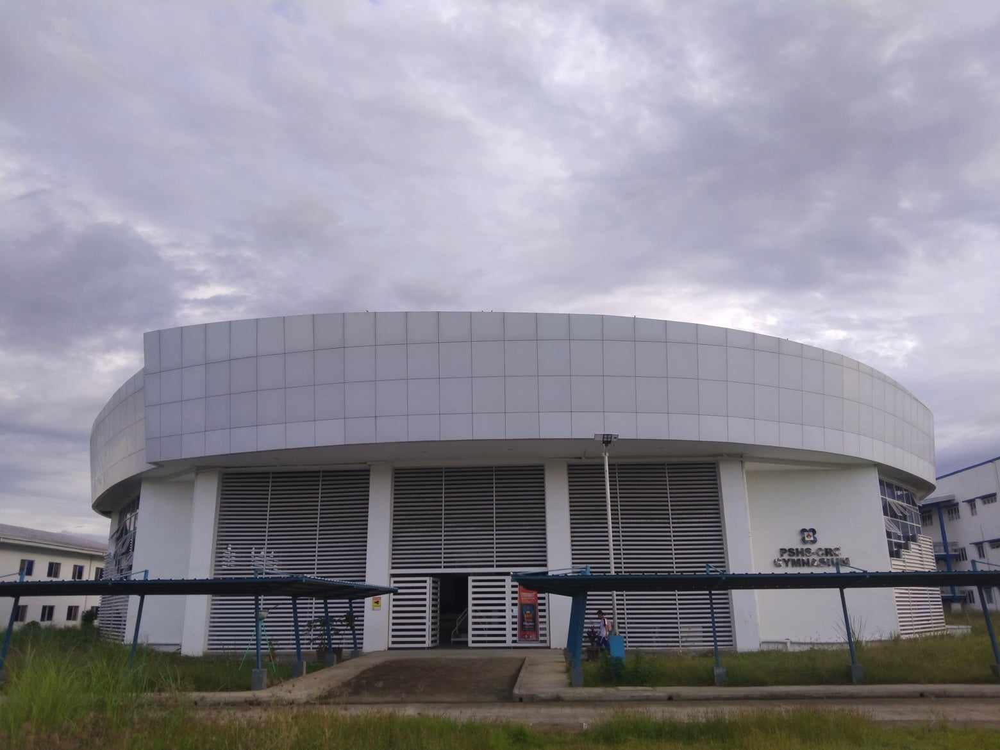

Academic building II (Acad 1) or the main building is where the guidance office, registrar
office and classrooms of grade 7, 8, 9 and 10 scholars. The AVR or the audio visual room and the discipline
office is also located here. Lively isn't it?
The academic building II (Acad 2) is where the computer laboratories are found.
A perfect place for your class with your adviser, like math, statistics and computer science subjects.
Cool right? This place is where the scholars can fully focus on their classes, especially
if it's a computer science subject, since it's the perfect environment for learning.
The academic building III (Acad 3) is where the biology, chemistry, and physics
laboratories are found. This building is where the scholars conduct their activities or experiments for
their learning and development. A perfect environment to study and conduction of experiments.
The academic building IV (Acad 4) is the newly finished building of PSHS-CRC.
This is where the classrooms of the advancement year scholars, grade 11 and 12, are found.
The CID office is also found here along with the offices of the subject teachers of PSHS-CRC.

The Fab Lab (Fabrication laboratory) is the place where the scholars
can create, a place for them to learn, develop their skills in inventing and a place for
them to see the wonders of robotics and technology.

The PSHS-CRC library is where students spend of most their free time. Scholars can be
seen studying, taking naps, and quietly spend quality time with friends. Do you want to experience this too?
The Dormitory I is a 3 story building. This was the only
dormitory for scholars of PSHS-CRC for the older batches until the completion of Dormitory II.
After the completion of Dormitory II, female scholars occupied the new building while
the boys occupied dormitory I. This is the 2nd home of dormers, filled with fun memories with roommtaes,
bacthmates, and classmates
This building is also a 3 story building. The activity center is the liveliest
during band practices and glee club meetings. The ground
floor and second floor is the canteen while the 3rd floor is the student activity center.
Grandstand is the most lively place especially after class, since students
go here to play games such as volleyball, badminton, and etc. Other students also come here to sit
and relax, talk with their friends, and watch other students playing.

The PSHS-CRC gymnasium is where all the events of PSHS-CRC are held here.
This place is also where the indoor sports club members spend their time during club meetings every
Wednesday. Fun isn't it?
Admin office or administration office is the area where staff members who are
in charge of creating, executing, and assessing district and school systems and policies as well
as instructional leadership are seen. Campus Director, Cashiers, and other important staff can
be seen in admin office.